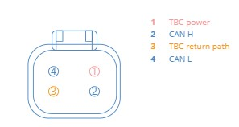
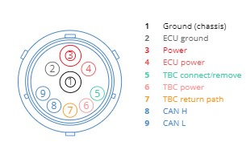
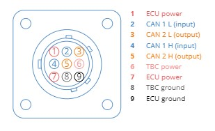
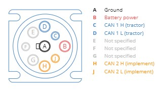

Czym jest ISOBUS? ISO 11783
ISOBUS to międzynarodowy standard (ISO 11783) komunikacji między ciągnikami a maszynami rolniczymi. Umożliwia wymianę danych i sterowanie urządzeniami różnych producentów w oparciu o magistralę CAN.
Cel: interoperacyjność, mniej monitorów w kabinie, zgodność funkcji VT/TC/AUX-N, jasne ścieżki serwisowe.
Funkcje ISOBUS
VT – Virtual Terminal plug-and-play
Uniwersalny terminal dotykowy, na którym każda maszyna ISOBUS wyświetla własne UI. Jeden ekran zamiast wielu monitorów.
TC-BAS – Task Controller Basic
Rejestrowanie i zarządzanie zadaniami/aplikacjami (nawóz, oprysk, siew). Eksport/Import z/do Farm Management (np. ISOXML).
TC-SC – Section Control wymaga aktywacji
Automatyczne sterowanie sekcjami (włącz/wyłącz) dla uniknięcia nakładek i oszczędności materiału.
TC-GEO – Zmienna dawka wymaga aktywacji
Precyzyjna aplikacja wg map aplikacyjnych (GPS). Dawka dostosowana do strefy pola.
AUX-N – Rozszerzone sterowanie wymaga aktywacji
Sterowanie maszyną z joysticków/przycisków AUX-N; ergonomia i bezpieczeństwo w kabinie.
Sprawdzanie kompatybilności
Nie każdy zestaw ciągnik-narzędzie ma komplet zgodnych funkcji. Sprawdź certyfikację w bazie AEF.
W bazie AEF filtruj po producencie, modelu, funkcji (VT/TC-BAS/TC-SC/TC-GEO/AUX-N) i wersji softu.
Wtyczki ISOBUS
#1: Bus Extension Connector
Rozszerzenie linii ISOBUS z urządzenia do wnętrza ciągnika – np. do podłączenia terminala.
#2: Implement Bus Breakaway Connector (IBBC)
Złącze łączące narzędzie z ISOBUS ciągnika, zwykle z tyłu.
#3: In-cab Connector (LBS)
Opcjonalne złącze wewnątrz kabiny do sieci ISOBUS.
#4: Diagnostic Connector
Złącze diagnostyczne w kabinie – do rejestratorów/diagnozy.
Protokół J1939 w ISOBUS
SAE J1939 – standard komunikacji (CAN, PGN, SPN) będący bazą warstwy transportowej ISOBUS. Zapewnia spójne adresowanie, diagnostykę i wymianę danych między ECU.
- Warstwa fizyczna: CAN 250 kbit/s (typowo)
- PGN/SPN: identyfikacja ramek i sygnałów
- Adresacja: dynamiczna (NAM), źródło/cele ECU
W praktyce: zgodność J1939 ułatwia integrację monitoringu silnika, skrzyni, układów pomocniczych z terminalem.